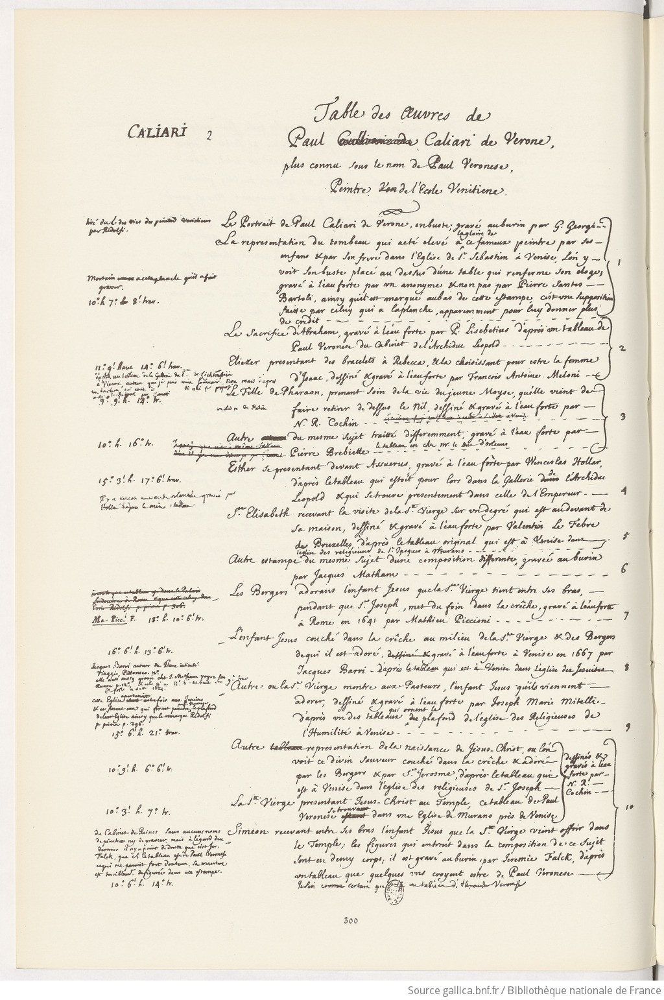

Table des Oeuvres de Paul Caliari de Verone, dit Véronèse, plus connu sous le nom de Paul Véronèse, Peintre de l'École Vénitienne

Fac-similé p. 300
Source: Gallica
1
Le Portrait de Paul
Caliari (représenté) de Vérone, en buste, gravé au burin en réduction par
G. Georgi. (graveur)
tiré du l. des vies des peintres vénitiens par Ridolfi (écrivain).
La representation du tombeau qui a été elevé à la gloire du fameux
peintre par ses enfans et par son frere dans l'Eglise de St. Sebastien à Venise, l'on y
voit son buste placé au dessus d'une table qui renferme son doge, gravé à
l'eau-forte par un anonyme et non pas par Pierre Santos Bartoli, ainsy qu'il
est marqué au bas de cette estampe, c'est une supposition faicte par celuy
qui a la planche, apparemment pour lui donner plus de crédit.
Martin a
cette planche qu'il a fait graver. Dimensions: 10°.h x 7°. 8'. trav.
Le Portrait de Paul
Caliari (représenté) de Vérone, en buste, gravé au burin en réduction par
G. Georgi. (graveur)
tiré du l. des vies des peintres vénitiens par Ridolfi (écrivain).
La representation du tombeau qui a été elevé à la gloire du fameux
peintre par ses enfans et par son frere dans l'Eglise de St. Sebastien à Venise, l'on y
voit son buste placé au dessus d'une table qui renferme son doge, gravé à
l'eau-forte par un anonyme et non pas par Pierre Santos Bartoli, ainsy qu'il
est marqué au bas de cette estampe, c'est une supposition faicte par celuy
qui a la planche, apparemment pour lui donner plus de crédit.
Martin a
cette planche qu'il a fait graver. Dimensions: 10°.h x 7°. 8'. trav.
2
Le Sacrifice d'Abraham, gravé à l'eau-forte par P. Lisebetius (graveur) d'après un
tableau de Paul Veronese (auteur)
du Cabinet de l'Archiduc
Leopold (collectionneur).
Eliezer presentant des bracelets à Rebecca, et la choisissant pour estre
la femme d'Isaac, dessiné et gravé à l'eau-forte par François-Antoine Meloni (graveur).
Dimensions: 11.° 9.' haut x 14.° 6.' trav. d'après un tableau de la gallerie du P.ce de Lichtensetein à Vienne, autant
que je puis m'en souvenir. non mais d'après un dessins (?) qui etoit
[...] et qui fut proposé à M. le Régent (?) par Zanetti.
Le Sacrifice d'Abraham, gravé à l'eau-forte par P. Lisebetius (graveur) d'après un
tableau de Paul Veronese (auteur)
du Cabinet de l'Archiduc
Leopold (collectionneur).
Eliezer presentant des bracelets à Rebecca, et la choisissant pour estre
la femme d'Isaac, dessiné et gravé à l'eau-forte par François-Antoine Meloni (graveur).
Dimensions: 11.° 9.' haut x 14.° 6.' trav. d'après un tableau de la gallerie du P.ce de Lichtensetein à Vienne, autant
que je puis m'en souvenir. non mais d'après un dessins (?) qui etoit
[...] et qui fut proposé à M. le Régent (?) par Zanetti.
3
La fille de Pharaon, prenant soin de la vie du jeune Moyse, qu'elle vient
de faire retirer de dessus le Nil, dessiné et gravé à l'eau-forte par
N. R. Cochin (graveur)
Dimensions: 9.° 9'. h. x 14.° tr. du livre de Patin (écrivain)
Autre du mesme sujet traitté differemment, gravé à l'eau-forte par
Pierre Brebiette (graveur) le
tableau est chez M. le duc
d'Orléans (collectionneur)
Dimensions: 10°. h. x 16°. tr.
La fille de Pharaon, prenant soin de la vie du jeune Moyse, qu'elle vient
de faire retirer de dessus le Nil, dessiné et gravé à l'eau-forte par
N. R. Cochin (graveur)
Dimensions: 9.° 9'. h. x 14.° tr. du livre de Patin (écrivain)
Autre du mesme sujet traitté differemment, gravé à l'eau-forte par
Pierre Brebiette (graveur) le
tableau est chez M. le duc
d'Orléans (collectionneur)
Dimensions: 10°. h. x 16°. tr.
4Esther se presentant devant Assureus gravé à l'eau-forte par Wenceslaus
Hollar (graveur), d'après le tableau qui estoit pour lors dans la Gallerie de l'Archiduc
Leopold (collectionneur) et qui se trouve presentement dans celle de l'Empereur
Dimensions: 15.° 3'. h. x 17.° 6.' trav. Il y a encore une autre planche gravée par Hollar d'après le même
tableau
5 Sainte Elisabeth recevant la visite de la sainte vierge sur un degré qui
est au devant de sa maison, dessiné et gravé à l'eau-forte par Valentin Le Febre de Bruxelles, d'après le tableau
original qui est à Venise dans l'église des religieuses de St. Jacques à Murano.